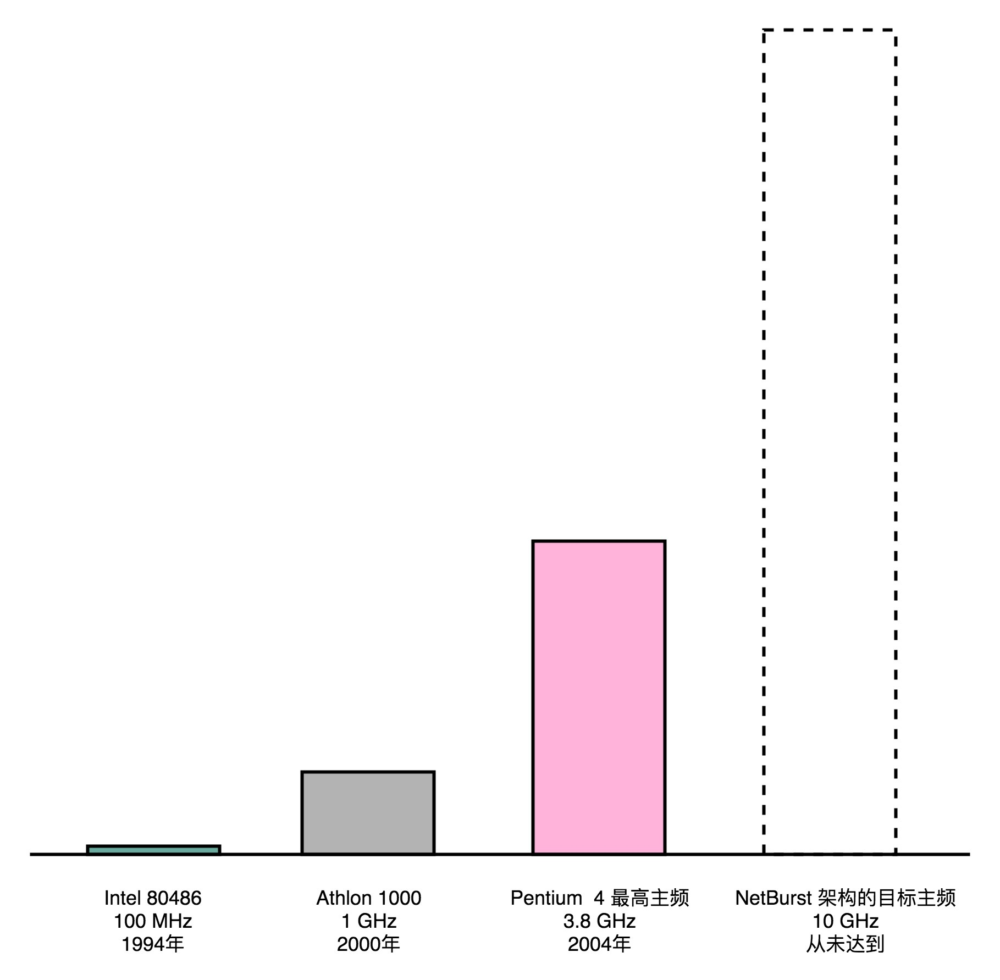

- 00 开篇词 为什么你需要学习计算机组成原理？.md
- 01 冯·诺依曼体系结构：计算机组成的金字塔.md
- 02 给你一张知识地图，计算机组成原理应该这么学.md
- 03 通过你的CPU主频，我们来谈谈“性能”究竟是什么？.md
- 04 穿越功耗墙，我们该从哪些方面提升“性能”？.md
- 05 计算机指令：让我们试试用纸带编程.md
- 06 指令跳转：原来if...else就是goto.md
- 07 函数调用：为什么会发生stack overflow？.md
- 08 ELF和静态链接：为什么程序无法同时在Linux和Windows下运行？.md
- 09 程序装载：“640K内存”真的不够用么？.md
- 10 动态链接：程序内部的“共享单车”.md
- 11 二进制编码：“手持两把锟斤拷，口中疾呼烫烫烫”？.md
- 12 理解电路：从电报机到门电路，我们如何做到“千里传信”？.md
- 13 加法器：如何像搭乐高一样搭电路（上）？.md
- 14 乘法器：如何像搭乐高一样搭电路（下）？.md
- 15 浮点数和定点数（上）：怎么用有限的Bit表示尽可能多的信息？.md
- 16 浮点数和定点数（下）：深入理解浮点数到底有什么用？.md
- 17 建立数据通路（上）：指令加运算=CPU.md
- 18 建立数据通路（中）：指令加运算=CPU.md
- 19 建立数据通路（下）：指令加运算=CPU.md
- 20 面向流水线的指令设计（上）：一心多用的现代CPU.md
- 21 面向流水线的指令设计（下）：奔腾4是怎么失败的？.md
- 22 冒险和预测（一）：hazard是“危”也是“机”.md
- 23 冒险和预测（二）：流水线里的接力赛.md
- 24 冒险和预测（三）：CPU里的“线程池”.md
- 25 冒险和预测（四）：今天下雨了，明天还会下雨么？.md
- 26 Superscalar和VLIW：如何让CPU的吞吐率超过1？.md
- 27 SIMD：如何加速矩阵乘法？.md
- 28 异常和中断：程序出错了怎么办？.md
- 29 CISC和RISC：为什么手机芯片都是ARM？.md
- 30 GPU（上）：为什么玩游戏需要使用GPU？.md
- 31 GPU（下）：为什么深度学习需要使用GPU？.md
- 32 FPGA、ASIC和TPU（上）：计算机体系结构的黄金时代.md
- 33 解读TPU：设计和拆解一块ASIC芯片.md
- 34 理解虚拟机：你在云上拿到的计算机是什么样的？.md
- 35 存储器层次结构全景：数据存储的大金字塔长什么样？.md
- 36 局部性原理：数据库性能跟不上，加个缓存就好了？.md
- 37 理解CPU Cache（上）：“4毫秒”究竟值多少钱？.md
- 38 高速缓存（下）：你确定你的数据更新了么？.md
- 39 MESI协议：如何让多核CPU的高速缓存保持一致？.md
- 40 理解内存（上）：虚拟内存和内存保护是什么？.md
- 41 理解内存（下）：解析TLB和内存保护.md
- 42 总线：计算机内部的高速公路.md
- 43 输入输出设备：我们并不是只能用灯泡显示“0”和“1”.md
- 44 理解IO_WAIT：IO性能到底是怎么回事儿？.md
- 45 机械硬盘：Google早期用过的“黑科技”.md
- 46 SSD硬盘（上）：如何完成性能优化的KPI？.md
- 47 SSD硬盘（下）：如何完成性能优化的KPI？.md
- 48 DMA：为什么Kafka这么快？.md
- 49 数据完整性（上）：硬件坏了怎么办？.md
- 50 数据完整性（下）：如何还原犯罪现场？.md
- 51 分布式计算：如果所有人的大脑都联网会怎样？.md
- 52 设计大型DMP系统（上）：MongoDB并不是什么灵丹妙药.md
- 53 设计大型DMP系统（下）：SSD拯救了所有的DBA.md
- 54 理解Disruptor（上）：带你体会CPU高速缓存的风驰电掣.md
- 55 理解Disruptor（下）：不需要换挡和踩刹车的CPU，有多快？.md
- 结束语 知也无涯，愿你也享受发现的乐趣.md
21 面向流水线的指令设计（下）：奔腾4是怎么失败的？
上一讲，我给你初步介绍了 CPU 的流水线技术。乍看起来，流水线技术是一个提升性能的灵丹妙药。它通过把一条指令的操作切分成更细的多个步骤，可以避免 CPU“浪费”。每一个细分的流水线步骤都很简单，所以我们的单个时钟周期的时间就可以设得更短。这也变相地让 CPU 的主频提升得很快。
这一系列的优点，也引出了现代桌面 CPU 的最后一场大战，也就是 Intel 的 Pentium 4 和 AMD 的 Athlon 之间的竞争。在技术上，这场大战 Intel 可以说输得非常彻底，Pentium 4 系列以及后续 Pentium D 系列所使用的 NetBurst 架构被完全抛弃，退出了历史舞台。但是在商业层面，Intel 却通过远超过 AMD 的财力、原本就更大的市场份额、无所不用的竞争手段，以及最终壮士断腕般放弃整个 NetBurst 架构，最终依靠新的酷睿品牌战胜了 AMD。
在此之后，整个 CPU 领域竞争的焦点，不再是 Intel 和 AMD 之间的桌面 CPU 之战。在 ARM 架构通过智能手机的快速普及，后来居上，超越 Intel 之后，移动时代的 CPU 之战，变成了高通、华为麒麟和三星之间的“三国演义”。
“主频战争”带来的超长流水线
我们在第 3 讲里讲过，我们其实并不能简单地通过 CPU 的主频，就来衡量 CPU 乃至计算机整机的性能。因为不同的 CPU 实际的体系架构和实现都不一样。同样的 CPU 主频，实际的性能可能差别很大。所以，在工业界，更好的衡量方式通常是，用 SPEC 这样的跑分程序，从多个不同的实际应用场景，来衡量计算机的性能。
但是，跑分对于消费者来说还是太复杂了。在 Pentium 4 的 CPU 面世之前，绝大部分消费者并不是根据跑分结果来判断 CPU 的性能的。大家判断一个 CPU 的性能，通常只看 CPU 的主频。而 CPU 的厂商们也通过不停地提升主频，把主频当成技术竞赛的核心指标。
Intel 一向在“主频战争”中保持领先，但是到了世纪之交的 1999 年到 2000 年，情况发生了变化。
1999 年，AMD 发布了基于 K7 架构的 Athlon 处理器，其综合性能超越了当年的 Pentium III。2000 年，在大部分 CPU 还在 500～850MHz 的频率下运行的时候，AMD 推出了第一代 Athlon 1000 处理器，成为第一款 1GHz 主频的消费级 CPU。在 2000 年前后，AMD 的 CPU 不但性能和主频比 Intel 的要强，价格还往往只有 Intel 的 2/3。
在巨大的外部压力之下，Intel 在 2001 年推出了新一代的 NetBurst 架构 CPU，也就是 Pentium 4 和 Pentium D。Pentium 4 的 CPU 有个最大的特点，就是高主频。2000 年的 Athlon 1000 的主频在当时是最高的，1GHz，然而 Pentium 4 设计的目标最高主频是 10GHz。

为了达到这个 10GHz，Intel 的工程师做出了一个重大的错误决策，就是在 NetBurst 架构上，使用超长的流水线。这个超长流水线有多长呢？我们拿在 Pentium 4 之前和之后的 CPU 的数字做个比较，你就知道了。
Pentium 4 之前的 Pentium III CPU，流水线的深度是 11 级，也就是一条指令最多会拆分成 11 个更小的步骤来操作，而 CPU 同时也最多会执行 11 条指令的不同 Stage。随着技术发展到今天，你日常用的手机 ARM 的 CPU 或者 Intel i7 服务器的 CPU，流水线的深度是 14 级。
可以看到，差不多 20 年过去了，通过技术进步，现代 CPU 还是增加了一些流水线深度的。那 2000 年发布的 Pentium 4 的流水线深度是多少呢？答案是 20 级，比 Pentium III 差不多多了一倍，而到了代号为 Prescott 的 90 纳米工艺处理器 Pentium 4，Intel 更是把流水线深度增加到了 31 级。
要知道，增加流水线深度，在同主频下，其实是降低了 CPU 的性能。因为一个 Pipeline Stage，就需要一个时钟周期。那么我们把任务拆分成 31 个阶段，就需要 31 个时钟周期才能完成一个任务；而把任务拆分成 11 个阶段，就只需要 11 个时钟周期就能完成任务。在这种情况下，31 个 Stage 的 3GHz 主频的 CPU，其实和 11 个 Stage 的 1GHz 主频的 CPU，性能是差不多的。事实上，因为每个 Stage 都需要有对应的 Pipeline 寄存器的开销，这个时候，更深的流水线性能可能还会更差一些。
我在上一讲也说过，流水线技术并不能缩短单条指令的响应时间这个性能指标，但是可以增加在运行很多条指令时候的吞吐率。因为不同的指令，实际执行需要的时间是不同的。我们可以看这样一个例子。我们顺序执行这样三条指令。
- 一条整数的加法，需要 200ps。
- 一条整数的乘法，需要 300ps。
- 一条浮点数的乘法，需要 600ps。
如果我们是在单指令周期的 CPU 上运行，最复杂的指令是一条浮点数乘法，那就需要 600ps。那这三条指令，都需要 600ps。三条指令的执行时间，就需要 1800ps。
如果我们采用的是 6 级流水线 CPU，每一个 Pipeline 的 Stage 都只需要 100ps。那么，在这三个指令的执行过程中，在指令 1 的第一个 100ps 的 Stage 结束之后，第二条指令就开始执行了。在第二条指令的第一个 100ps 的 Stage 结束之后，第三条指令就开始执行了。这种情况下，这三条指令顺序执行所需要的总时间，就是 800ps。那么在 1800ps 内，使用流水线的 CPU 比单指令周期的 CPU 就可以多执行一倍以上的指令数。
虽然每一条指令从开始到结束拿到结果的时间并没有变化，也就是响应时间没有变化。但是同样时间内，完成的指令数增多了，也就是吞吐率上升了。

新的挑战：冒险和分支预测
那到这里可能你就要问了，这样看起来不是很好么？Intel 的 CPU 支持的指令集很大，我们之前说过有 2000 多条指令。有些指令很简单，执行也很快，比如无条件跳转指令，不需要通过 ALU 进行任何计算，只要更新一下 PC 寄存器里面的内容就好了。而有些指令很复杂，比如浮点数的运算，需要进行指数位比较、对齐，然后对有效位进行移位，然后再进行计算。两者的执行时间相差二三十倍也很正常。
既然这样，Pentium 4 的超长流水线看起来很合理呀，为什么 Pentium 4 最终成为 Intel 在技术架构层面的大失败呢？
第一个，自然是我们在第 3 讲里讲过的功耗问题。提升流水线深度，必须要和提升 CPU 主频同时进行。因为在单个 Pipeline Stage 能够执行的功能变简单了，也就意味着单个时钟周期内能够完成的事情变少了。所以，只有提升时钟周期，CPU 在指令的响应时间这个指标上才能保持和原来相同的性能。
同时，由于流水线深度的增加，我们需要的电路数量变多了，也就是我们所使用的晶体管也就变多了。
主频的提升和晶体管数量的增加都使得我们 CPU 的功耗变大了。这个问题导致了 Pentium 4 在整个生命周期里，都成为了耗电和散热的大户。而 Pentium 4 是在 2000～2004 年作为 Intel 的主打 CPU 出现在市场上的。这个时间段，正是笔记本电脑市场快速发展的时间。在笔记本电脑上，功耗和散热比起台式机是一个更严重的问题了。即使性能更好，别人的笔记本可以用上 2 小时，你的只能用 30 分钟，那谁也不爱买啊！
更何况，Pentium 4 的性能还更差一些。这个就要我们说到第二点了，就是上面说的流水线技术带来的性能提升，是一个理想情况。在实际的程序执行中，并不一定能够做得到。
还回到我们刚才举的三条指令的例子。如果这三条指令，是下面这样的三条代码，会发生什么情况呢？
int a = 10 + 5; // 指令 1
int b = a * 2; // 指令 2
float c = b * 1.0f; // 指令 3
我们会发现，指令 2，不能在指令 1 的第一个 Stage 执行完成之后进行。因为指令 2，依赖指令 1 的计算结果。同样的，指令 3 也要依赖指令 2 的计算结果。这样，即使我们采用了流水线技术，这三条指令执行完成的时间，也是 200 + 300 + 600 = 1100 ps，而不是之前说的 800ps。而如果指令 1 和 2 都是浮点数运算，需要 600ps。那这个依赖关系会导致我们需要的时间变成 1800ps，和单指令周期 CPU 所要花费的时间是一样的。
这个依赖问题，就是我们在计算机组成里面所说的冒险（Hazard）问题。这里我们只列举了在数据层面的依赖，也就是数据冒险。在实际应用中，还会有结构冒险、控制冒险等其他的依赖问题。
对应这些冒险问题，我们也有在乱序执行、分支预测等相应的解决方案。我们在后面的几讲里面，会详细讲解对应的知识。
但是，我们的流水线越长，这个冒险的问题就越难一解决。这是因为，同一时间同时在运行的指令太多了。如果我们只有 3 级流水线，我们可以把后面没有依赖关系的指令放到前面来执行。这个就是我们所说的乱序执行的技术。比方说，我们可以扩展一下上面的 3 行代码，再加上几行代码。
int a = 10 + 5; // 指令 1
int b = a * 2; // 指令 2
float c = b * 1.0f; // 指令 3
int x = 10 + 5; // 指令 4
int y = a * 2; // 指令 5
float z = b * 1.0f; // 指令 6
int o = 10 + 5; // 指令 7
int p = a * 2; // 指令 8
float q = b * 1.0f; // 指令 9
我们可以不先执行 1、2、3 这三条指令，而是在流水线里，先执行 1、4、7 三条指令。这三条指令之间是没有依赖关系的。然后再执行 2、5、8 以及 3、6、9。这样，我们又能够充分利用 CPU 的计算能力了。
但是，如果我们有 20 级流水线，意味着我们要确保这 20 条指令之间没有依赖关系。这个挑战一下子就变大了很多。毕竟我们平时撰写程序，通常前后的代码都是有一定的依赖关系的，几十条没有依赖关系的指令可不好找。这也是为什么，超长流水线的执行效率发而降低了的一个重要原因。
总结延伸
相信到这里，你对 CPU 的流水线技术，有了一个更加深入的了解。你会发现，流水线技术和其他技术一样，都讲究一个“折衷”（Trade-Off）。一个合理的流水线深度，会提升我们 CPU 执行计算机指令的吞吐率。我们一般用 IPC（Instruction Per Cycle）来衡量 CPU 执行指令的效率。
IPC 呢，其实就是我们之前在第 3 讲讲的 CPI（Cycle Per Instruction）的倒数。也就是说， IPC = 3 对应着 CPI = 0.33。Pentium 4 和 Pentium D 的 IPC 都远低于自己上一代的 Pentium III 以及竞争对手 AMD 的 Athlon CPU。
过深的流水线，不仅不能提升计算机指令的吞吐率，更会加大计算的功耗和散热问题。Intel 自己在笔记本电脑市场，也很快放弃了 Pentium 4，而是主推了使用 Pentium III 架构的图拉丁 CPU。
而流水线带来的吞吐率提升，只是一个理想情况下的理论值。在实践的应用过程中，还需要解决指令之间的依赖问题。这个使得我们的流水线，特别是超长的流水线的执行效率变得很低。要想解决好冒险的依赖关系问题，我们需要引入乱序执行、分支预测等技术，这也是我在后面几讲里面要详细讲解的内容。
推荐阅读
除了之前的教科书之外，我推荐你读一读Modern Microprocessors, A 90-Minute Guide!这篇文章。这篇文章用比较浅显的方式，介绍了现代 CPU 设计的多个方面，很适合作为一个周末读物，快速理解现代 CPU 的设计。